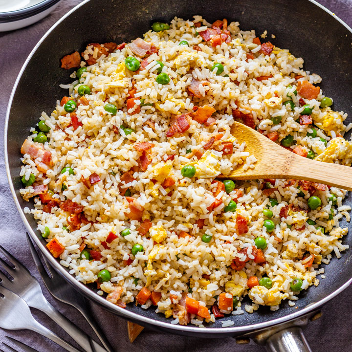

amazing bacon fried rice

home
ingredients
- day old rice must be left in fridge overnight
- onion one, diced finely
- garlic two cloves, diced
- bacon lots of this
- two eggs beat and add a pinch of salt
- spring onion three stalks chopped fine for color
- soy sauce a spoonful to color the rice
- cooking oil
- condiments sriracha, ketchup
you will need
- frying pan or pot non stick is always good
- kitchen knife knife should be sharp
- wooden spatula
steps
first things first
take overnight rice out of fridge bring it closer to room temperature
the vegetables
peel and dice garlic
peel onions, and dice into small squares
wash spring onion and chop fine
the proteins
chop bacon into squares
beat two eggs in a bowl until mixed and add a pinch of salt
lets get cooking
- pre-heat your frying pan on medium heat, wait about 1-2 minutes and add oil to coat pan
- add onions and garlic into the pan and stirfry until aromatic and onions are almost clear
- add bacon and continue the room should start smelling really good now
- take pan off the heat and add eggs mix well and return to the heat
- add cold rice and combine you'll need to break chunks of rice up
- now is a good time to add 2/3 of your spring onions save rest for garnish at the end
- once the rice is all broken up and softened, add soy sauce in a circular motion around inner pan mix well
- once everything is mixed, take off heat and add rest of spring onions
you can add hot sauce or ketchup, enjoy!